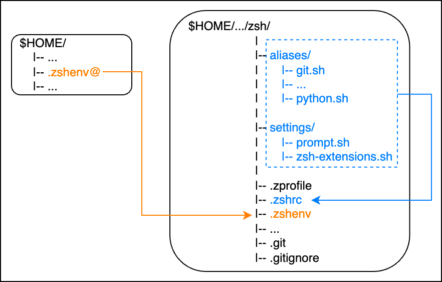

1.4. Zsh#
Zsh
Z shell (Zsh) is one of the Unix command shells. It can be used as an interactive login command shell and as a powerful shell script command interpreter. Zsh can also be viewed as an extended version of Bourne Shell with many improvements. Not only that, but some useful features of bash, ksh, and tcsh are also incorporated. - wikipedia
1.4.1. Manage .zsh* files in zsh/ directory#

{kind=link}
.zsh* files are easy to get messy in the home directory. By setting $ZDOTDIR, most files can be moved from the home directory. In the following, .zsh* is managed in a directory named zsh/.
- zsh/
|-- aliases/
|-- git.sh
|-- ...
|-- python.sh
|-- settings/
|-- prompt.sh
|-- zsh-extensions.sh
|-- .zprofile
|-- .zshrc
|-- .zshenv
|-- ...
|-- .git
|-- .gitignore
Set zsh/ as ZDOTDIR so that .zsh* in it is read.
# In .zshenv
# Set zsh/ to ZDOTDIR
export ...
export ZDOTDIR="$HOME/path/to/zsh"
# Put the alias of .zshenv in the home directory
.zshenv -> '/Users/$HOME/path/to/zsh/.zshenv'
1.4.2. .zshrc#
.zshrc files are also easy to get messy, so divide them into files for each content and read them from other files. Here, we have prepared directories called aliases and settings in the same hierarchy as .zshrc, and put the files to be read in them.
[[ -f $ZDOTDIR/settings/prompt.sh ]] && . $ZDOTDIR/settings/prompt.sh
...
[[ -f $ZDOTDIR/aliases/git.sh ]] && . $ZDOTDIR/aliases/git.sh
[[ -f $ZDOTDIR/aliases/python.sh ]] && . $ZDOTDIR/aliases/python.sh
...
Hint
👉 Other dotfiles in the home directory can also be collected in the same directory and symbolic links can be created from there to the home directory for easy management.